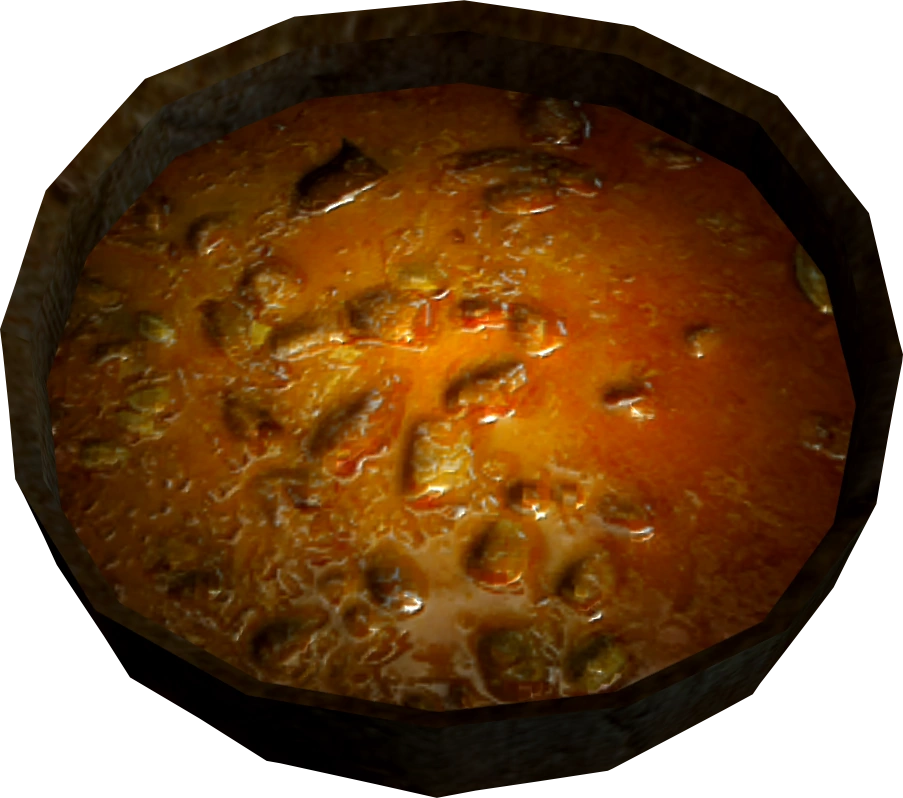

Apple Cabbage Stew
Skyrim

A normal sounding dish with an unpalatable twist
The sweetness and acidity of apples, a hearty and nutritious foundation of cabbage.
Absolutely ruined with a heart attack inducing quantity of salt.
Ingredients
- Cabbage
Ok, normal so far
- Red Apple
Sounds great
- Salt Pile
I'm sorry, salt pile???
It's important to note that the Salt Pile item appears to be a half full bowl of salt.
Sources vary in how much salt it takes to kill the average person, but given the
0.2 (units? Kg?) item weight, I estimate this soup could kill 2-3 adult humans.
Steps
- Acquire ingredients:
- Cabbages can be harvested or purchased from many merchants or stolen from them
- Red Apples cannot be harvested from apple trees, don't bother, find them scattered around or check with merchants
- Salt pile can be found in random barrels and with merchants that sell food or alchemical supplies
- Find a cooking spit or a cooking pot
- Interact with cooking spit or pot and select the desired recipe
More Recipes